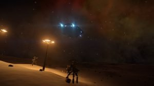

Engalo was born on earth 3270 same year the new AJN battle cruiser, the Victor class, is unveiled. His parents, both technical engineers working for Controlled technologies Inc, who produced appliances for private use. Engalo’s early years was pretty normal to what you would expect from a middleclass family on Earth at the time.
When Engalo was 6 years old he and he’s family sat round the table eating dinner when the news on Galnet came trough that an strange object of unknown origin where discovered in the vicinity of Liazeda. Named the LRA (Liazeda Radio Anomaly), the Alliance research ship, the Lion, was sent to investigate.
This sparked the imagination in young Engalo. Drawn to the viewscreen in the living room young Engalo absorbed everything that was happening in the Liazeda system, almost wishing they would find something exiting or maybee Aliens!
When the LRA and the ship Lion disappears and its fate unknown, only fuels the imagination and feeling of awe young Engalo now feels. This episode was to shape Engalo’s direction forever, and from that point onwards he had stars in he’s eyes and the determination that one day; HE would solve that mysteri and find the Lion now lost. At age 16, ten years after the LRA incident Engalo starts he’s first year on the Pilots Academy. Doing extremly well and early earning a name for himself, beeing amongst the top 3 in his class Engalo graduate with top scores.
Flying as a co pilot for about a year Engalo finaly in 3290 buys his first ship. A sparkley new Cobra Mk III. He names here “Tally-ho”
Tally-ho is an old earth saying from the foxhunting almost 2000 years ago. It was while riding horses the rider who spotted the pray (Fox) yelled “Tally-ho!” to signal to the other riders he had spotted the prey. Today the term has evolved to have other meanings, most of which relate to ‘pointing out’ or ‘spotting’ a ‘target’.
Newly painted bright red, Tally-ho greeted Engalo for the first time in the hangar, and yes, it was love at first sight.
For 10 years Engalo flew Tally-ho, mostly hauling cargo from one place to another all over the bubble. Not much of interest happened in this period of Engalo’s life other than the occasional pirate here and there.
She was a worn out old hull rusting in a hangar bay on Li Qing Jao station. Engalo found here after visiting his parents on earth and stopped at Li Qing Jao station to refuel. The Tally-ho did also blew a circuit-board on the way from earth that needed replacing, so Engalo roamed the station while waiting for the engineers to replace the part. That was when he found here. The rusty old Deptford Prize standing there neglected and almost screaming at him. “BUY ME!”
The owner was an old woman by the name of Cloe Wallesh. She had owned the Asp since it was brand new, but she regarded herself now to old for star travels. She didn’t have the heart to sell here at the time of retirement so the Deptford Prize had been sitting in the hangar bay for 5 years worn and neglected. Engalo invited Cloe Wallesh out for dinner, hoping to talk here in to selling him the Asp. It was surprisingly easy. The old, warm and loving Cloe had only one condition. That Engalo did not change the name. Engalo agreed without hesitation.
He was now owner of a rusty old hulk collecting dust on a station orbiting earth.
Low on funds Engalo sold Tally-ho and with what little he could scrape together he started to glue the old Asp back together.
This was going to take Engalo one and a haf year’s to renew the old ship. Exhausting all of his funds doing so.
Finally she was ready for action. Onward toward adventure!

Engalo just managed to land a big payout smuggling illegal personal weapons from Maia to the Khodhis system.
With fresh money in his pocket and still those stars in his eyes, there is a universe of discoveries to be found out there!
No matter how unlikely, Engalo finds himself amongst the Canonn Research Group people. He’s thirst for knowledge? A step in he’s quest to eventually find the lost research ship Lion? Who knows? Engalo is an odd one, not talking much… but always paying close attention, always watching.